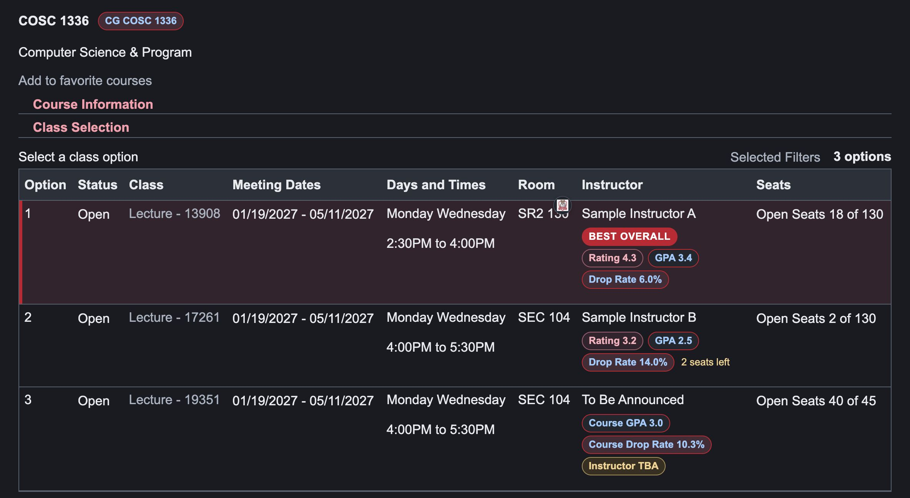

FOR UNIVERSITY OF HOUSTON STUDENTS
myUH, after dark.
Dark pages, readable tables, and a toggle right on the page.

ON-PAGE CONTROLS

Turn it on once.Keep browsing
in dark mode.
in dark mode.
Dark pages, readable tables, and a toggle right on the page.
